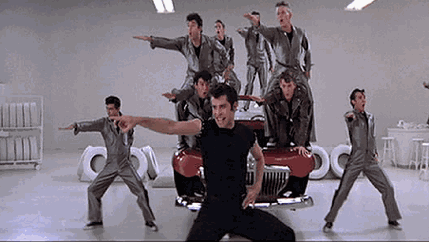
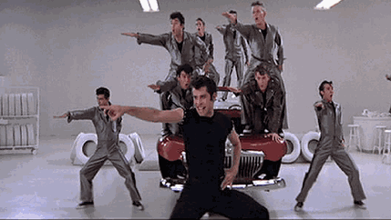
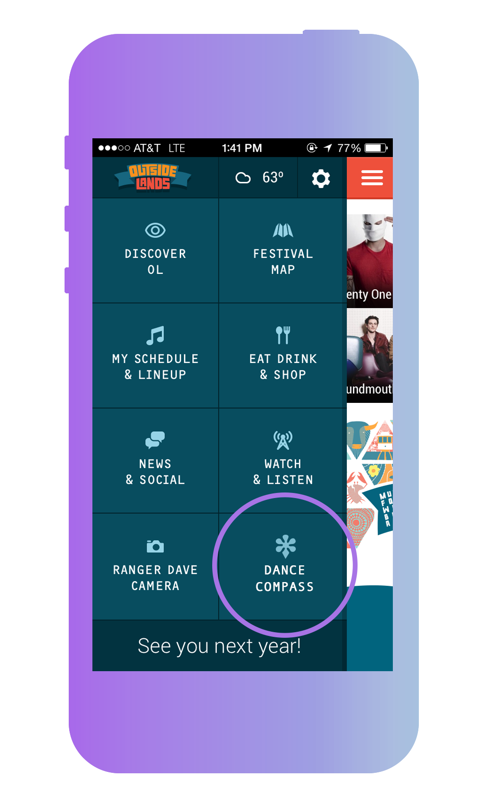

OUTSIDE HACKS OFFICIAL COVER SLIDE FOR PRESENTING MOBILE BASED PLATFORM FOR OPTIMIZING DANCE LEVELS AT OUTSIDE LANDS.
A SERIOUS PROBLEM
point you to the party
Wheres the next party?
TRAVOLTAGE
 


see the dance


thank you to
outside hacks
judges / weebly /
sponsors / travis
